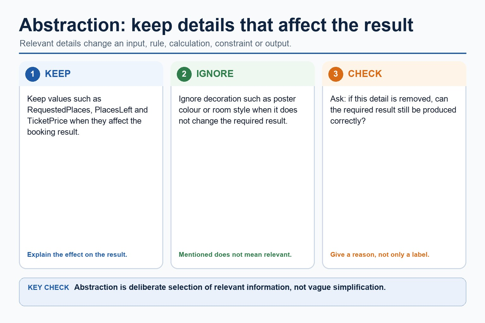
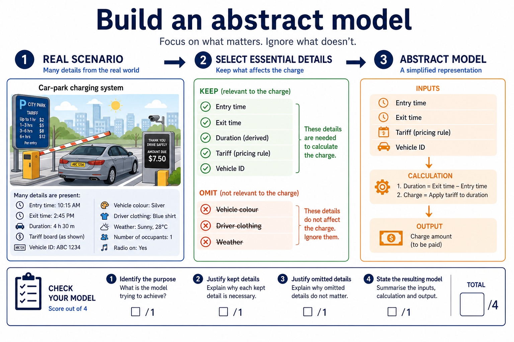
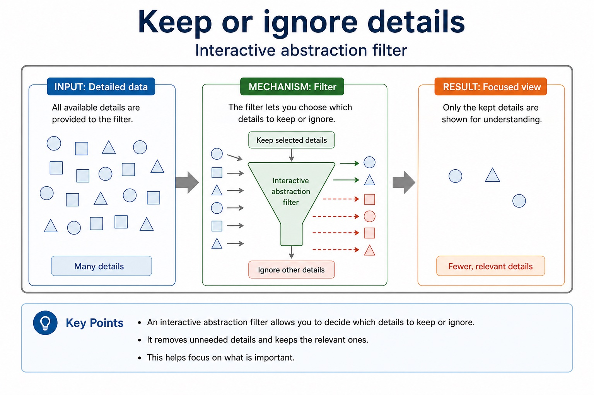

Abstraction and decomposition into program modules
Abstraction removes each irrelevant detail that does not affect the required inputs, rules, constraints or outputs. Producing an abstract model means recording the essential details that remain: the data, relationships and processes needed to solve the problem, not merely listing what was ignored.
Decomposition breaks a problem into smaller sub-problems with distinct responsibilities. Express the resulting design as program modules with clear inputs, processing and outputs; a module may later be implemented as a procedure that performs an action or a function that returns a value.
Abstraction decides what belongs in the model; decomposition decides how the retained problem is divided. The modules must connect into one complete solution and must not omit a requirement.
Worked example: Model and decompose a car-park charge
Keep entry time, exit time and tariff; omit car colour because it cannot change the charge. Express the solution as modules InputTimes, CalculateDuration, CalculateCharge and OutputCharge. CalculateCharge can become a function returning the charge, while OutputCharge can become a procedure that displays it.
Core syllabus practice
Abstraction and decomposition into program modules: apply and assess
Targeted practice
1. What must an abstract model contain?
Show answer
The essential details and relationships/processes needed to solve the problem.
2. What does decomposition produce here?
Show answer
Smaller sub-problems expressed as connected program modules with clear responsibilities.
3. Compare a procedure module from a function module at this design stage.
Show answer
A procedure performs an action; a function returns a value to its caller.
Exam-style question
6 marks
Write an abstract model for a school meal bill, then decompose it into named program modules and identify one likely procedure and one likely function.
Show MS
Answer
Guidance
Marks
retains meal choice, quantity and price as essential details
Do not award only a list of omitted details, vague Part1/Part2 labels or modules that do not collectively solve the problem.
1
states the calculation and total output in the abstract model
1
excludes a justified irrelevant detail such as tray colour
1
expresses the problem as connected modules with distinct responsibilities
1
identifies a suitable procedure module that performs an action
1
identifies a suitable function module that returns a value
Big problems stop being scary when you give each part a sensible job.
Decomposition breaks a problem into smaller sub-problems. Abstraction keeps the important details and
ignores details that do not affect the algorithm. Together, they help you plan before writing Cambridge-style
implementation. Later lessons introduce control structures and formal notation.
Decomposesplit a problem into input, checking, calculation and output sub-problems
Abstractkeep algorithm-relevant details and ignore decorative or implementation details
Justifyexplain why modular design improves readability, testing and correction
School event booking system
break into
Input detailsValidate ageCheck placesCalculate costOutput result
Abstraction asks: does the algorithm need the poster colour? No. Does it need the number of places left? Yes.
Why this matters
Paper 2 often rewards clear planning. A correct decomposition reveals responsibilities, required data and outputs before implementation starts.
Common error
Do not call every tiny line a module. A useful sub-problem has a clear purpose and can be tested or explained separately.
Warm-up hook
Plan a school trip without causing a spreadsheet incident
A teacher asks for a program to manage trip bookings. Which details affect the algorithm, and which details are noise?
Choose a detail to decide whether abstraction should keep it or ignore it.
Knowledge explanation
Decomposition: split the problem into sub-problems
Problem
Possible sub-problems
Why this helps
Calculate class average
Input marks, validate marks, total marks, calculate average, output average
Chinese support: decomposition = 分解，把大问题拆成更小、更容易解决的部分；sub-problem = 子问题。
Decomposition: split the problem into sub-problems
Decomposition: split the problem into sub-problems: source-grounded visual explanation.
Lesson fact: Split the whole task into meaningful sub-problems with distinct responsibilities.
Lesson fact: Express the resulting design as program modules with clear inputs, processing and outputs.
Lesson fact: A module may become a procedure that performs an action or a function that returns a value.
Lesson fact: Confirm that all modules connect into one complete solution.
Knowledge explanation
Abstraction: keep the details that affect the algorithm
Keepinputs, ranges, counts, limits, required outputs and stopping conditions.Ignorevisual style, real-world decoration and details that do not change the logic.Nameuse meaningful identifiers such as Mark, TotalCost, PlacesLeft and IsValid.Modelrepresent the real situation using only the named values and relationships the problem requires.Checkask whether removing a detail would change the algorithm's result.Explainstate why a detail is relevant or irrelevant, not just that it is "important".
A good abstraction is not vague. It is deliberately selective. 选择性保留关键细节，不是随便省略。
Abstraction: keep the details that affect the algorithm

Abstraction: keep the details that affect the algorithm: source-grounded visual explanation.
Lesson fact: Keep details that affect an input, rule, calculation, constraint or output.
Lesson fact: Ignore decoration that does not change the required result.
Lesson fact: Ask whether removing a detail would change the result.
Lesson fact: Explain why a detail is relevant or irrelevant rather than only labelling it.
Design pattern
From scenario to algorithm plan
1Read the scenario and underline the required output.
2List inputs and constraints.
3Decompose into sub-problems with verb-based names.
4Abstract away details that do not affect logic.
5Describe each sub-problem's responsibility, input and output.
Produce an abstract model

Produce an abstract model: source-grounded visual explanation.
Lesson fact: Underline the required output and keep only details that affect it.
Lesson fact: Create verb-based sub-problems with distinct responsibilities.
Lesson fact: State each sub-problem's input and output.
Lesson fact: Check that the parts collectively meet every requirement without gaps or overlap.
Lesson fact: The result is a natural-language responsibility plan ready for a later representation lesson.
Interactive task sorter
Classify the design move
Choose a statement to see whether it demonstrates decomposition, abstraction or an error.
Classify the design move
Classify the design move: source-grounded visual explanation.
Lesson fact: Interactive task sorter
Lesson fact: Design statement
Lesson fact: Choose a statement to see whether it demonstrates decomposition, abstraction or an error.
Interactive abstraction filter
Keep or ignore details
Keep or ignore details

Keep or ignore details: source-grounded visual explanation.
Lesson fact: Interactive abstraction filter
Interactive module builder
Generate a decomposition plan
Choose a scenario to generate sub-problems and abstraction choices.
Worked examples
From messy scenario to clean plan
Practice with instant checking
Decomposition and abstraction vocabulary
Type concise answers. Use Show answer after committing to a response.
Mistake debugging
Fix weak planning decisions
Exam-style questions
Original Cambridge-style planning questions with expandable MS
These questions target decomposition, abstraction, modular planning and precise explanation. MS uses strict Cambridge-style expectations.
Summary
Planning checklist
DecomposeSplit the task into meaningful sub-problems with a clear purpose.
AbstractKeep only details that affect inputs, processing, outputs or constraints.
ConnectShow how the sub-problems combine into one complete algorithm.
Homework
Clear tasks for consolidation
Task 1: Decomposition planChoose a vending machine, quiz scoring system or library loan system. Write five sub-problems using verb-based names.Task 2: Abstraction tableList eight scenario details. Mark each as keep or ignore, then give one sentence explaining the algorithmic reason.Task 3: Exam paragraphAnswer: "Explain how decomposition and abstraction help when designing an algorithm." Write 6-8 precise lines with examples.